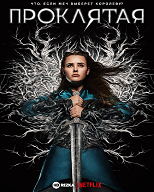

КиноБаза
Кино - наша страсть!
Бриджертоны/Bridgerton
Дата выхода: 25 декабря 2020 года
События разворачиваются в начале XIX-го века в Лондоне вокруг богатой и уважаемой семьи Бриджертон, состоящей из леди Вайолет, овдовевшей после смерти своего мужа Эдмунда, и восьми детей – четырех сыновей и дочерей, названных в алфавитном порядке по мере своего рождения. Все еще молодые и не состоящие в браке, братья и сестры учатся жить в высшем обществе...
В ночь/Into the Night
Дата выхода: 1 мая 2020 года
В аэропорту Брюсселя полуночный пассажирский рейс готовится к вылету в Москву и почти никто не обращает внимание на выпуски новостей со всего мира, где миллионы людей умирают от соприкосновения с солнечными лучами. Итальянский военный, знающий больше, чем кто-либо другой из присутствующих, вооружается автоматом и захватывает самолет...

Хрупкие создания/Tiny Pretty Things
Дата выхода: 14 декабря 2020 года
В городе Чикаго находится элитная школа для юных балерин. Сюда мечтают попасть все талантливые девушки, потому что после выпуска из учебного заведения многие становились звездами и собирали огромные залы на своих выступлениях. За стенами этой школы порой творятся очень странные события: не так давно отсюда была изгнана лучшая ученица. На её место было решено взять другую студентку...

Проклятая/Cursed
Дата выхода: 17 июля 2020 года
Сюжет сериала, основанный на одноименном романе американских писателей Фрэнка Миллера и Тома Уилера, сосредоточится вокруг Ниму — юной чародейки, обладающей таинственным даром. Когда красные паладины, возглавляемые безжалостным отцом Карденом, собираются уничтожить обитателей сказочного мира, героине поручено доставить волшебный меч загадочному старцу Мерлину...

Ходячие мертвецы/The Walking Dead
Дата выхода: 31 октября 2010 года
Полчища зомби в сериале Ходячие мертвецы (The Walking Dead) захватили все вокруг, и теперь семья обычного шерифа живет в мире ужаса и страха. Они и небольшая кучка людей заняты поиском места, где смогли бы безопасно жить. Но не покидающее их чувство страха, приносит тяжелые потери, заставляя их почувствовать человеческую жестокость. Шериф всячески пытается спасти ...

Кремниевая долина/Silicon Valley
Дата выхода: 6 апреля 2014 года
Главный герой сериала Ричард Хендрикс, который является крайне одаренным программистом и работает в одной из крупнейших интернет компаний, трудится над созданием своего собственного музыкального сайта. Ему удается создать технологию сжатия музыки без потерь, не имеющую конкурентов. Хендриксу поступает сразу же несколько...

Во все тяжкие/Breaking Bad
Дата выхода: 20 января 2008 года
Действия криминального сериала «Во все тяжкие» разворачиваются в самом большом городе штата Нью-Мексико – Альбукерке. Главный герой Уолтер Уайт – пятидесятилетний школьный учитель химии, которому врачи ставят неутешительный диагноз - рак легких на последней стадии. Узнав о своем диагнозе, и учитывая тяжелое финансовое положение своей семьи...

Секретные материалы/The X files
Дата выхода: 10 сентября 1993 года
В центре сюжета сериала двое агентов ФБР – доктор Дана Скалли, преподававшая в академии ФБР, и Фокс Малдер. Им предстоит работать вместе над правительственным проектом под названием «Секретные материалы», куда входят все нераскрытые дела, связанные с паранормальными явлениями, пришельцами....